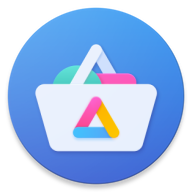

The following are some reccomended alternatives to common Android apps. It is adviseable to use FOSS (free open source software) apps where possible as you can validate any privacy claims made by the developer.
App stores
F-Droid
F-Droid is an app repository that contains only FOSS apps. In addition to the default selection, it can be extended by adding more app repositories. Almost all of the apps talked about on this page are available on F-droid.
Large number of FOSS apps
Lists "anti-features" clearly
Extensible
Auto-update apps and repos
Does not host any proprietary apps
Searching isnt as good as proprietary app stores (e.g. Google Play/Aurora)
Aurora Store
If you still need to download proprietary apps/those not currently on F-droid, Aurora allows you to download any app found on the Google Play store without the need for a Google account. It was initially forked from Yalp Store but is more regularly updated and features a more intuitive UI. This is a better option than just downloading an APK as Aurora automatically updates apps and means you don't need to manually download apps from potentially malicious websites.
Can download all apps found on the Google Play Store
Can "sign in" without a Google account
Lists trackers in apps
Auto-uptates installed apps
"Anonymous" account sometimes doesnt work
Does not provide as much privacy information as F-Droid
Tor
Orbot
Tor is a system designed to make users anonymous when using the internet. Using the Tor network has many advantages over using a VPN service. Firstly, Tor is decentralized - meaning that you are not placing your trust in a company that is capable of viewing your internet activity and keeping logs. Using a VPN provider gives you the same level of privacy as simply sending your data directly to your ISP; the only difference being that it is sent to another company (who may or may not be more trustworthy). Additionally, Tor sends your traffic through multiple user-hosted nodes/relays in a network of thousands. More information on how the Tor service works can be found here.
VPN
This section will not cover VPN providers, but instead apps that support importing VPN configurations. For a good list of VPN providers, I recommend seeing the listed VPN providers at privacytools.io. While these apps can support multiple providers, many first-party VPN apps may support more privacy features and may be more suitable.
OpenVPN for Android
The majority of VPN providers use the OpenVPN protocol so it would make sense to use their app as opposed to downloading a separate (possibly closed source) app from the provider. OpenVPN for Android lets you import multiple VPN profiles and has useful additional features such as connecting to a specified VPN when the device is started, pausing the VPN connection when the screen is off, and reconnecting to a VPN automatically if connection is lost.
Wider range of VPN providers
Does not save IP addresses to server by default
Dynamic IP address assignment
Outdated encryption protocols
Increased resource use
Slower network speeds
WireGuard
Similarly to the OpenVPN app, WireGuard s a protocol that is used by multiple VPN providers, and therefore such providers are supported by this app. While WireGuard is not nearly as widespread as OpenVPN, it features several improvements including improved performance (network speeds, resource usage, faster handshake) and updated encryption using more up to date protocols than OpenVPN. Despite the increased performance and security, WireGuard has various minor privacy issues such as storing IP addresses in the VPN server's RAM for the duration of the connection and not assigning dynamic IP addresses. These issues, however, are often circumvented by features provided by VPN services like Mullvad.
Up to date, improved encryption protocols
Decreased resource use (longer battery life)
Faster network speeds
Fewer supported VPN providers
Saves connected IPs to server by default ("fixed" by various VPN providers)
No dynamic IP address assignment ("fixed" by various VPN providers)
Web browser
Tor Browser
Replacing the Orfox browser, the Tor browser for android integrates Tor protocols and allows you to navigate the web entirely through the Tor network. The app itself is based on Firefox and currently has implemented the majority of changes and features present in the desktop release. While this is the best browser to secure your privacy on Android, it may be unsuitable in cases where you may not want to use the Tor network. Therefore, it is recommended you also install another non-Tor privacy-respecting browser.
Uses the Tor network
Additional privacy features
Preconfigured advanced privacy settings
Slower network speeds due to Tor connection
No way to use without Tor
Not as optimised as Chromium-based brosers
Bromite
Bromite is a browser based on Chromium which patches out Google features that do not respect privacy (similar to ungoogled-chromium). It also features additional privacy improvements such as a built-in ad/tracker blocker using filters from multiple sources, DNS-over-HTTPS support, and other privacy patches. As it is built on Chromium, it performs better than Firefox-based browsers in the majority of situations and does not require patches to be implemented manually via user.js, add-ons, or about:config tweaks. Because of this, however, it can be harder to customize various settings and features manually compared to Firefox.
Chromium-based, more optimised for Android
Faster connection speeds than Tor Browser
Additional privacy features compared to default Chrome/Chromium
Removed much of the Google tracking in Chromium
Additional privacy tweaks
No Tor support
No extension support
Less privacy/security settings than Firefox
Firefox/Fennec/Firefox Focus
Similarly to their desktop releases, Mozilla advertises Firefox Mobile as a privacy-focused browser. Compared to Google Chrome and other Chromium-based browsers, Firefox collects less user data and almost no identifiable information depending on the settings used. It also has more privacy features and settings built in that can be configured via a custom user.js file or by tweaking about:config. As well as a default release, Mozilla also has a browser with many privacy configurations already made, and additional privacy features called Firefox Focus. For a fork of Firefox without proprietary code, Fennec is available on F-Droid. For additional steps to make Firefox a more privacy-respecting, secure browser see additional tips.
Faster connection speeds than Tor Browser
More privacy and security features than Chrome/Chromium
No Google tracking
Granular and extensive privacy/security tweaks via about:config and user.js
Extension support
No Tor support
Less optimised for android than Chromium-based browsers
Required a lot of configuration
Firewall
An effective way to prevent privacy-invasive apps from constantly connecting to servers you do not want them to is to use a firewall. While this can improve privacy, it can also require a lot of set up and maintenance to block only the desired connections.
NetGuard
NetGuard is an open-source firewall that allows apps/addresses to be blocked individually without the need to root your device. As well as allowing and blocking certain apps, other features are included such as only allowing network traffic when the screen is on, notifying the user when an application accesses the internet and blocking advertisements and trackers using a hosts file. While the free version is feature-rich, the paid version includes additional features such as logging all outgoing traffic, blocking individual connections within an application and showing a network speed graph. As this app does not use root, it uses Android's in-build VPN functionality to monitor and block traffic. This unfortunately means that you cannot use this app alongside a VPN connection.
Regularly updated
Doesn't require rooting device
Ad/tracker blocking functionality using hosts file
Additonal blocking rules (screen on/off, roaming)
Notify when apps access internet
Block individual addresses per application (PAID)
View outgoing traffic logs (PAID)
Some features locked behind paywall
Cannot use along with a VPN
Can lose connection more often than a root option
Cannot import/export rules
AFWall+
Another open-source option is AFWall+. Similarly to NetGuard, it allows for individual apps and addresses to be blocked and provides notifications when a specified app accesses the internet. Unlike NetGuard, however, it does not provide functionality for blocking advertisements via a hosts file and is missing a few additional features available in NetGuard. As this app requires root, it uses iptables as opposed to Android's VPN functionality meaning it can be used along with a VPN. Additionally, it means that it will be applied to all apps and will be more reliable as it works on a lower level.
Block individual addresses per application for free
View outgoing traffic logs for free
Some features locked behind paywall
Can use along with a VPN
Works at a lower level, less likely to lose connection
Import/export rules
Less regularly updated
Requires rooting device
No ad/tracker blocking functionality
Less blocking rules than NetGuard
Password manager
KeePassDX
The best way to ensure your passwords are kept private and secure is by storing them locally in an encrypted file. KeePassDX is an open-source password manager that uses encrypted database files (.kdbx, .kdb) to import and export passwords. This means that you can share your password-protected database to other devices to sync your passwords and reimport it, for example by using Syncthing or a cloud storage service. Similar to many proprietary and non-self-hosted password managers, KeePassDX supports features like automatically adding login information for new apps/websites, auto-filling login fields, and locking the app with a pin/fingerprint.
Passwords not stored on someone else's server
Multiple encryption algorythms (AES, Twofish, ChaCha20, Argon2)
Auto-fill functionality
Importing and exporting databases between multiple devices
Available on most platforms
Must manually import/export databases
Possible to lose database accidentally
Bitwarden
While managing passwords locally using encrypted databases negates the risk of them being misused, it can be tedious to set up importing and exporting databases and there is a higher risk of losing them accidentally (drive failiure, accidental deletion, corruption). While most cloud-hosted password managers are closed source, and therefore cannot be trusted entirely with your data - Bitwarden is an open source password manager that uses their own cloud service to store passwords. While the software itself is open source, however, they still have access to your passwords on their server. This means that you need to trust their security measures will keep your password safe. To ensure this, Bitwarden is audited regularly, with reports freely available on their website. Finally, Bitwarden performs all encrpytion on the client's device using AES 256 bit encryption before it is uploaded to their servers.
Multiple encryption algorythms (AES 256bit, PBKDF2) performed before passwords uploaded
Auto-fill functionality
Automatically sync passwords via cloud
Less chance of losing database
Regularly audited
Passwords stored on an external server
Fewer encryption algorythms than KeePassDS
Cannot store databases locally
Available on less platforms
Storage/sync
Nextcloud
One of the most common ways to share and access files between devices is to use a cloud service. Often times, these are closed-source and require you to use external servers for an intuitive user experience. Nextcloud is a platform that provides an intuitive interface and features that allow for files to be uploaded, and downloaded from either a user hosted, or external server. This means that all data is owned and controlled by the user, or a data provider they have selected so they can be confident their data is not being misused. Nextcloud also has some nice features that make operating with data stored using it easier such as multiple accounts, calendar/contacts synchronisation, and automatically uploading/downloading files on a user defined schedule.
Can be self-hosted. You are in control of your data
Ability to be used with an external data provider
Supports multiple accounts
Sync files automatically
Integrated contacts/calendar
More reliable
Doesnt require storage space on both devices
More expensive, you must maintain your own hardware or pay for external server space
Centralised. There is a single point of failiure (be sure to back up to multiple devices)
Syncthing
An alternative to storing files on a single server is to automatically sync them between multiple devices using a service like Syncthing. This negates the need for a central server that needs to be maintained/paid for and means that data is stored on multiple devices, so if one breaks you do not lose your data. This works by making rules for individual files, such as only sending, only recieving, or both - reducing the risk of confilcts/overrides.
No interaction with external servers who can see your data
Automatically sync files between devices using rules
Less expensive than self-hosting/renting server space
Decentralised. If one device goes down your data is not lost
Does not support multiple accounts
No integrated calendar/contacts
Can be less reliable (failed syncs)
Requires storage space on both devices to sync files
Messaging/communication
Signal
Signal is a centralised messaging platform. This means that it uses its own proprietary servers to host conversations that are end-to-end enrypted. It supports common IM features such as VoIP, group chats, and video calls. This option is very easy to set up, and by default is private and secure (although your data is kept on an external server it is encrypted and the server is regulalry audited by external parties).
Simple to set up and use
Do not have to rely on potentially unsecure/privacy invasive user-hosted servers
End-to-end encryption by default
Server regularly audited
Requires a phone number that can be used to identify you
You need to trust signals privacy/security as it uses their servers
No function to bridge to other messaging services (WhatsApp, Slack, IRC, etc.)
Must use official client
Element
Previously known as Riot.im, Element is a federated messaging service that uses multiple indipendantly hosted servers as opposed to a single centralised server. This means that server owners have greater control over the data they host and can apply their own encryption protocols. Futhermore, using multiple user hosted servers means that there is less risk of your data being compromised as there is not only one target. Element also provides IM features such as VoIP, group chats, and video calls as well as a bridge to other messaging services (such as WhatsApp, Slack, IRC, and others).
Does not require a phone number
Can choose what servers to use/host your own
Can bridge to other messaging services (WhatsApp, Slack, IRC, etc.)
Can use other clients
Requires more set-up
Some user-hosted servers may not be secure, use encryption, or respect user privacy
No end-to-end encryption by default
Common/preinstalled app replacements
Simple Mobile Tools
The Simple Mobile Tools contains open source replacements for most commonplace apps. The aim of these apps is to be free of unecessary permissions and to be simple yet customisable. Apps part of this collection include:
- Simple Gallery
- Simple Calendar
- Simple Contacts
- Simple Notes
- Simple File Manager
- Simple Draw
- Simple Music Player
- Simple Flashlight
- Simple SMS Messenger
- Simple Voice Recorder
- Simple Dialer
- Simple Calculator
- Simple Clock
- Simple App Launcher
- Simple Camera
Other reccomendations
NewPipe (YouTube/SoundCloud)
As opposed to using the official YouTube app, NewPipe can be used to search and watch videos hosted on YouTube without a Google account. Futhermore, it allows you to subscribe to channels and import/export subscriptions as well as play videos in the background and download them. As well as YouTube, NewPipe doubles as an app to listen to music via SoundCloud.
OsmAnd+ (OSM client)
OsmAnd+ is a navigation and map app using data from OpenStreetMap and Wikipedia. It allows you to download maps and use them offline, and can also act as a sat-nav using voice guidance, route calculation, traffic warnings, and automatic re-routing. As OpenStreetMap is updated constantly, maps will more than likely be up to date and accurate.
K-9 Mail (Email client)
Instead of using a proprietary, possibly closed-source email client; K-9 Mail allows you to send and receivce emails with any service supporting POP3 or IMAP. Additionally, it supports encryption emails via OpenPGP with the OpenKeyChain app.